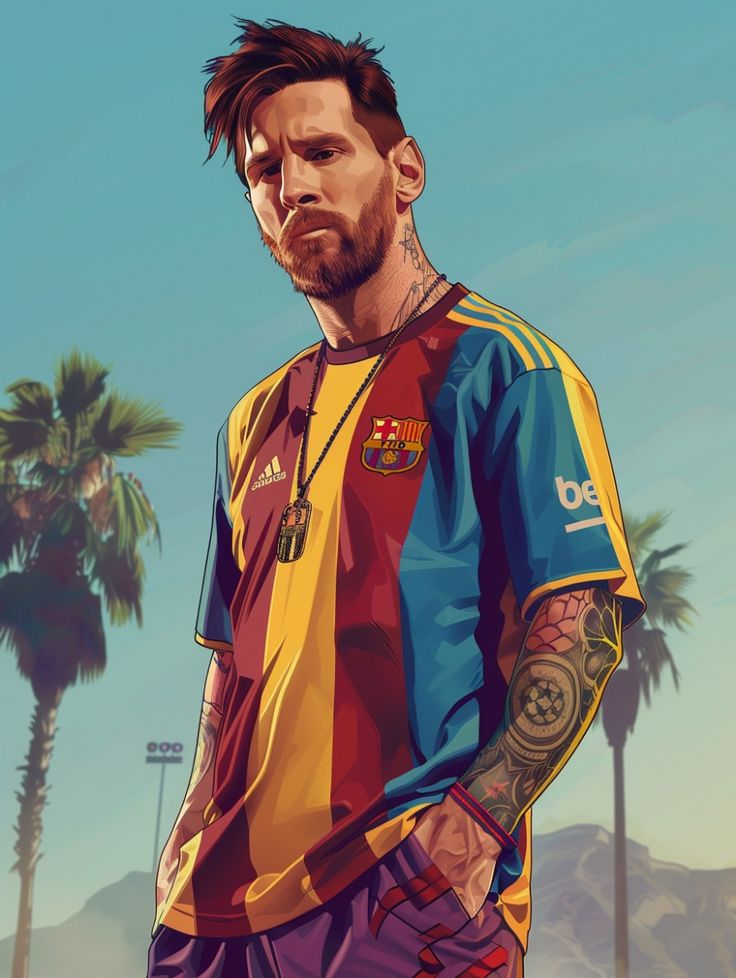
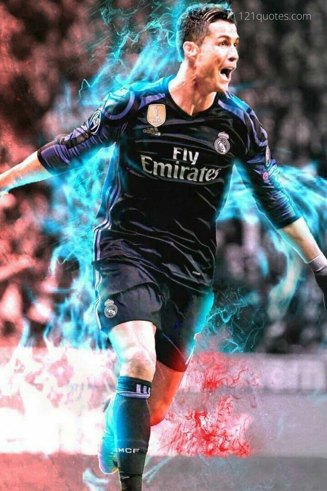
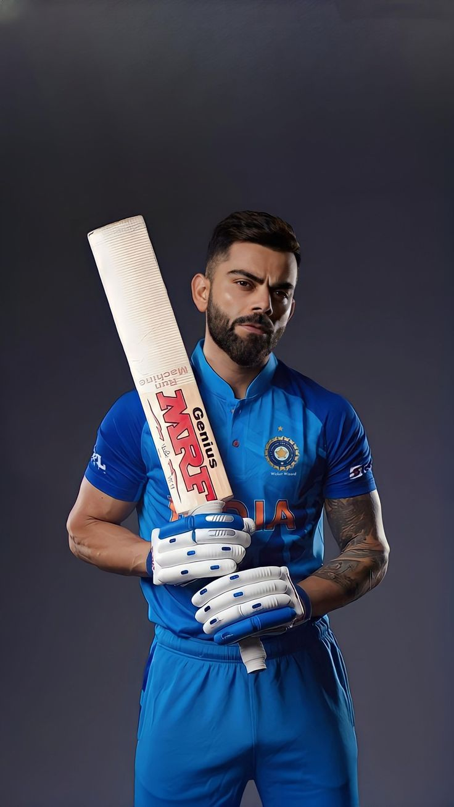
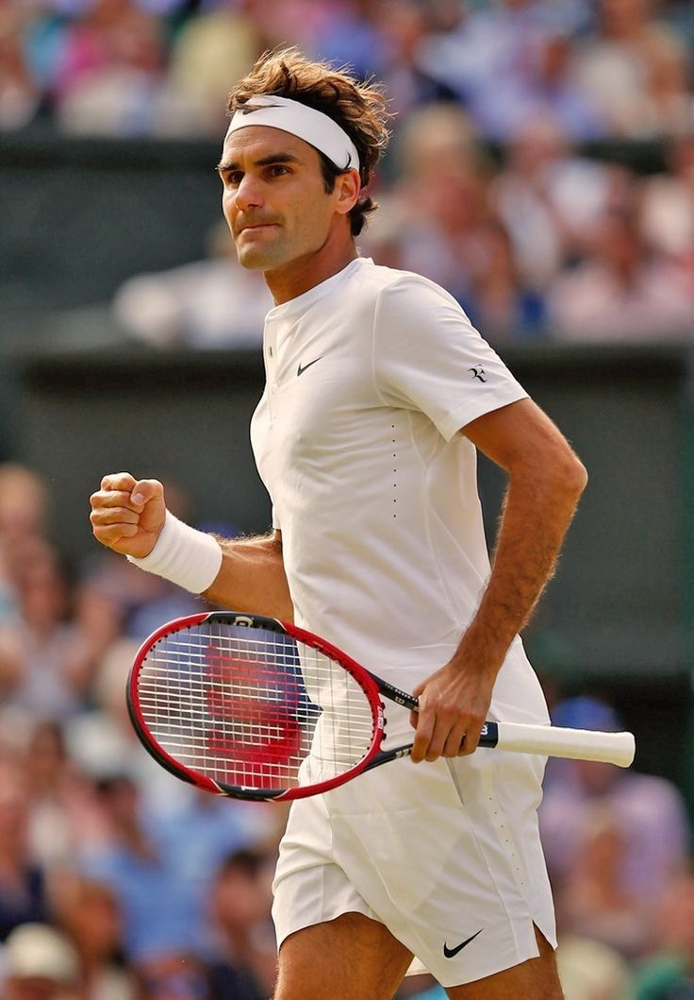
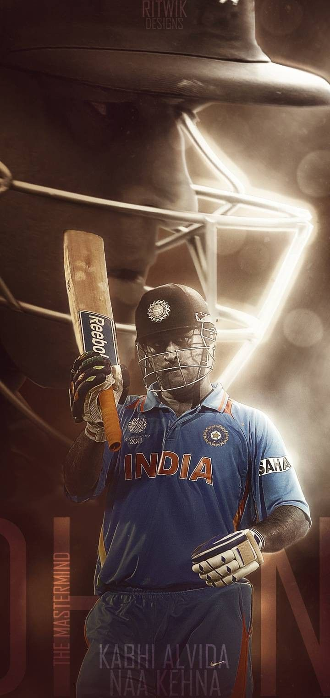

Lionel Messi is one of the finest football players of all time and arguably the most decorated football player of all time including team trophies like LaLiga, UCL, Copa America, FIFA WC etc. as well as individual awards Ballon D'or, Player Of The Tournaments and Golden Boot. He had a prolonged rivalry with Cristiano Ronaldo as they played for decorated clubs like Barca and Real Madrid respectively which are arguably 2 most successful European Clubs of all time. Over the years he has gained a massive fan following across the world. He won Copa America in 2021 and FIFA WC in 2022 while being the captain of Argentina Football Team.
Lionel Messi Cristiano Ronaldo is one of the finest football players of all time and the greatest ever from Europe. He is also known as Mr. UCL because he has had a decorated UCL career with 5 UCLs including a 3-peat with Real Madrid from 2016-2018 where he also finished as Player Of The Tournament. He has also been a part of Euro,2016 and UNL,2019 winning Portugal Team while winning Silver Boot and Golden Boot respectively in these tournaments. He is known for his insane longetivity. His celebration style Siuuu has been copied by various atheletes across different sports.
Cristiano Ronaldo Virat Kohli is acknowledged as one of the greatest cricketers of all time and greatest white ball cricketer of all time. He has numerous records to his name like Most ODI Centuries(50), Most runs in a single edition of ODI WC(765) as well as T20 WC(319), breaching highest rating points in ICC ranking, being only cricketer to win 3 POTTs in ICC Tournaments(T20 WC,2014; T20 WC,2016 and ODI WC, 2023). He has also been a part of ODI WC,2011 and Champions Trophy, 2013 with Indian Cricket Team with crucial contributions while being the top-scorer in the final in the later. He also has won 2 Orange Caps in IPL(2016 and 2023). Apart from his exploits as a batsman in ODI and T20, he has also made a name for himself for reviving Indian Test Team after becoming the captain in 2015 and went on to become Most Successful Asian Test Captain with 40 wins in the format. He is also known as the fittest cricketer of all time.
Virat Kohli Roger Federer is considered among the BIG-3 of tennis alongside Novak Djokvic and Rafa Nadal. He has won 20 Grand Slam Titles in Men's single which is the 3rd highest just behind Novak and Nadal. He has won Gold Medal in 2008 Olympics Men's Doubles and Silver Medal in 2012 Olympics Men's Singles. He has a career record of 82% winning percentage in Men's single. He retired from Tennis in 2024 and his retirement speech at a University where he talked about discipline and work ethics went viral across the globe and he received applauds for it.
Roger Federer MS Dhoni is regarded as the greatest wicket-keeper of all time and arguably the greatest captain of all time. He is the only captain to win all 3 ICC Trophies(ODI WC, T20 WC and Champions Trophy) as a captain. This makes him the best Indian Captain and 2nd most successful captain in World Cricket just behind Ricky Ponting. He is known for his quick hands behind the stumps where he has done many lightning-fast stumpings and runouts alogn with some spectacular catches. He is also regarded as the greatest WK-Batsman alongside Adam Gilchrist and Kumar Sangakara. He also won Player Of The Match award in WC,2011 Final for his fantastic innings of 91*. He has also played most ICC Finals as Indian Capatian(4). Alongside this, he led IPL Franchise Chennai Super Kings to 5 IPL Titles and 2 Clt20 titles as captain.
MS Dhoni Pat Cummins is the Australian Test and ODI Captain. He is considered as one of the best fast bowlers and ruled test cricket for a long time of his career. He was overshadowed for a long part of his career in White Ball Cricket because of players like David Warner, Glenn Maxwell and Mitchell Starc. But it was the year 2023 which made him the talk of the town in the cricketing world. He won WTC and ODI Wc in 2023 by defeating India in the finals of both the global events while leading from the front as a leader. In the ODI Wc, 2023 finals he took 2 crucial wickets of Shreyas Iyer and Virat Kohli who were in red-hot form and derailed India's batting in the final. He promised to silence the crowd, led from the front and kept his commitment making him the talk of the town in the cricketing world. He bame the first player in IPL auction his to breach the 20 Crore mark as he was purchased by Sunrisers Hyederabad in 2024 IPL Auctions for Rs. 20.75 Cr. He won the ICC Cricketer of the year award in 2023 for his performance both as a leader and as a player.
Pat Cummins